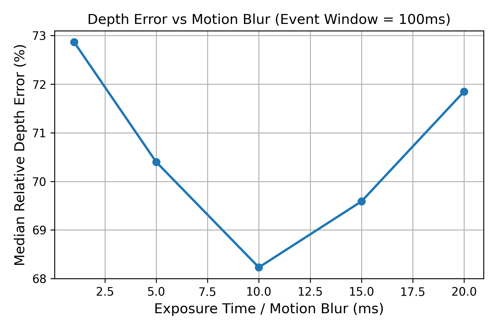

Research
Building this simulator led to some really interesting discoveries. Some of these actually proved our earlier assumptions completely wrong!
New Paper
When Blur is a Feature, Not a Bug
Event cameras are incredibly fast, but figuring out the 3D depth of objects using them is very hard.
Conventional wisdom says that motion blur on standard cameras destroys our ability to calculate depth.
However, we discovered a mathematically counter-intuitive result: motion blur is not a bug, but a necessary mathematical bridge!
By combining the temporal integration of an event camera with the spatial averaging of a motion-blurred camera frame,
we proved that the errors perfectly cancel out. In our simulations (flying at 10 m/s), using a motion-blurred
image actually improved our depth accuracy by over 20% compared to a perfectly sharp image!

As motion blur (exposure time) increases, depth error significantly decreases, confirming the mathematical theory.
This paper provides a closed-form, single-pixel depth estimator and dispels the myth that motion blur is strictly detrimental to visual-inertial systems.
Methodology
The "Ground Truth" is often wrong
Most robotics benchmarks use motion-capture cameras to record "ground truth" data, and everyone assumes
this data is perfectly exact. However, we discovered that these systems heavily smooth out fast movements.
If a drone rapidly spins, the motion-capture system just records a blurry, smoothed version of what actually happened.
Because of this, if your algorithm perfectly tracks a fast spin, it will actually be scored as "wrong"
because it disagrees with the smoothed-out motion-capture data!
| Reference bandwidth | Apparent gyro error | Error correlation | Error-vector angle |
|---|
| 2 Hz | 0.569° | +0.599 | 28° |
| 10 Hz | 0.272° | +0.127 | 49° |
| 20 Hz | 0.126° | −0.072 | 79° |
| exact | 0.109° | +0.023 | 83° |
This has two huge consequences. First, algorithms look up to 10× worse than they actually are.
Second, it makes it look like different sensors (like a camera and a gyroscope) are making the exact same errors at the exact same time,
even when they are completely independent.
If you are trying to write an algorithm that combines data from multiple sensors (sensor fusion),
bad ground truth data will make it seem like your algorithm isn't working, even if it is perfect.
Practice
The fisheye trap
Racing drones use ultra-wide fisheye lenses. It's incredibly easy to accidentally feed these fisheye images
into an algorithm that expects standard camera lenses. The scary part? The code won't crash! It will keep running,
spit out numbers that look somewhat believable, but every single output will be completely wrong.
We actually made this exact mistake in our own earlier research! When we fixed the bug and properly undistorted
the fisheye images, our tracking errors dropped by massive 61–73%.
Under an equidistant model image radius grows as f·θ, while a pinhole assumes f·tan θ. The
two diverge sharply toward the edge of a wide field.
Hardware
In-flight gyroscope noise is ~9× the datasheet
Calibrating the simulator against recorded flight required a gyroscope noise density of
about 0.043 rad/s/√Hz to reproduce measured error growth. The part is
specified at 0.005. The gap is almost certainly airframe vibration coupling into the sensor.
The practical consequence: simulate against datasheet figures and every inertial result you
produce will be optimistic by roughly an order of magnitude in noise power.
Negative results
Things we tried that did not work
Published in the same spirit as the rest. Each was killed by a cheap, decisive test rather
than months of development, which is the main argument for having a simulator at all.
Depth from motion blur
Blur extent encodes inverse depth, and the IMU supplies the blur direction, so only the
length is unknown. Four estimators — cepstral, deconvolution sharpness, gradient
kurtosis, spectral signature — all failed to recover blur length usably at realistic
magnitudes of 3–13 px. Coded exposure improved kernel conditioning as theory
predicts (destroyed frequency bins fell from 32/65 to 10/65) but did not rescue the
estimator.
Wide-baseline "sweep stereo"
A spinning drone re-points at the same direction after translating metres, which looks
like free wide-baseline stereo. Co-visibility collapses first: verified feature matches
fell to zero beyond roughly a 1 m baseline, and at racing speed even the shortest
revisit interval already exceeds that.
A negative result with a diagnosed mechanism is worth more than a positive one without.
Use it for your own work
The simulator is open source and the checks behind every number here are in the repository.